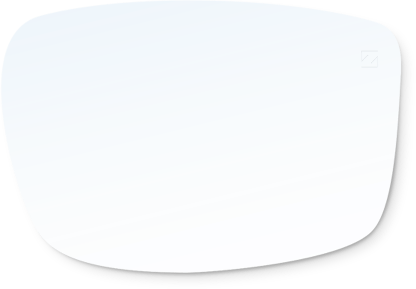
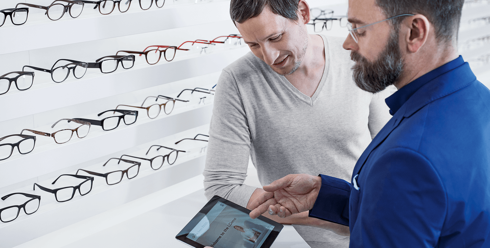
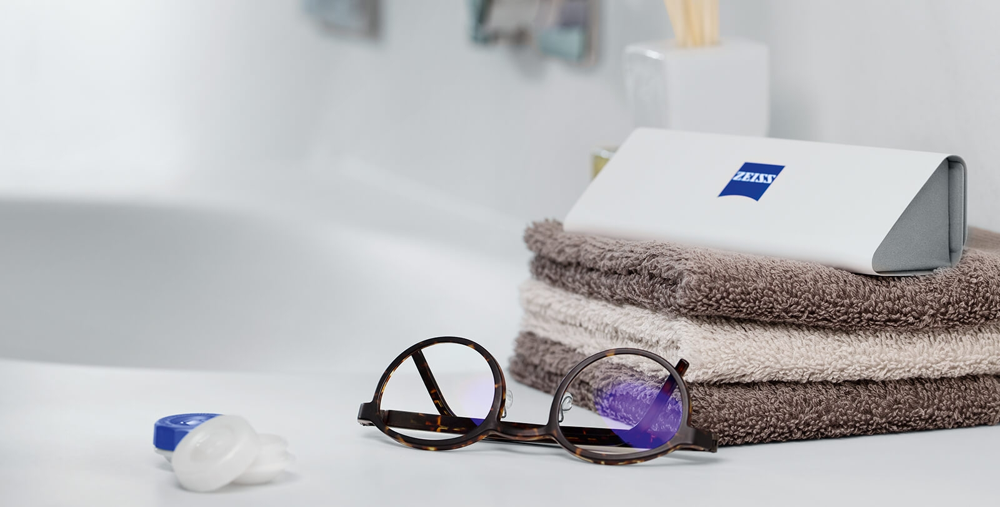

ZEISS EnergizeMe
Spectacle Lenses
Time to refresh your tired eyes.
Relaxed tired eyes, less eye strain, clear and sharp vision: ZEISS EnergizeMe spectacle lenses are the first of their kind worldwide to be specially designed for the needs of contact lens wearers.
The all-round package for stress-free vision after removing your contact lenses: the complete spectacle lens solution features an innovative lens design tailored to the visual behaviour of contact lens wearers combined with a technology and lens coating optimised for vision in the digital world. The glasses for contact lens wearers – treat your eyes to that special refreshed feeling.

ZEISS EnergizeMe.
The first spectacle lenses made for refreshing after contact lens time.
These days every contact lens wearer has at least one pair of glasses to give their eyes a break after wearing contacts for hours on end. Frequently using smartphones, tablets, etc. causes additional visual stress. But did you know that these glasses can do even more?
Enjoy more comfortable vision and refreshed eyes when switching to glasses after removing your contact lenses. ZEISS EnergizeMe spectacle lenses provide contact lens wearers with something more than a typical pair of glasses. These are specially optimised for contact lens wearers' visual behaviour and vision in the digital world.
Optician Search
Find a Zeiss Optician near you
Comfortable vision and refreshed eyes.
Experience total relaxation with these spectacle lenses for all contact lens wearers.
Who doesn't know the feeling? After wearing contact lenses for hours on end, your eyes are tired and your vision is no longer as clear as you'd like. Switching to glasses is definitely the right decision. Thanks to the special lens design, ZEISS EnergizeMe spectacle lenses are specially modified to accommodate contact lens wearers' typical visual behaviour and make switching to glasses a piece of cake – all while giving your eyes a break. Enjoy truly refreshed eyes that are ready for whatever comes next.
9 out of 10
testers feel refreshed and have reduced digital eye strain with
ZEISS EnergizeMe lenses1)
So long digital eye strain!
Enjoy comfortable vision when using your smartphone, laptop or tablet – thanks to innovative technology from ZEISS.
Even if not every one of us is a 'digital native', we all are increasingly using digital devices. This shift has caused our visual habits to fundamentally change: reading on digital devices requires a shorter reading distance, causing our eyes to shift extremely frequently from near to far and back again. In particular using a smartphone, tablet or a similar digital device for an extended period of time can result in stressed or overly tired eyes. ZEISS EnergizeMe spectacle lenses for contact lens wearers feature a special technology which makes it easier to read books and on all kinds of digital devices, making them an excellent way to prevent digital eye strain.
Additional visual comfort in artificial light.
Counteract eye fatigue and visual stress.
No matter if it's a smartphone, an LED lamp, a monitor, TV, tablet or an e-reader: modern light sources emit more blue light than we've ever experienced before. Many people find this light unpleasant and stressful because it adversely impacts our biorhythms and may even be dangerous for our eyes. A blue light filter in the spectacle lens can provide you with more comfortable vision.
Scratches and dirt don't stand a chance. More robust than ever.
High-performance lens coatings make your glasses extremely durable against scratches or adhesive dirt. The benefit: your lenses remain dirt-free for longer, making them significantly easier to clean. See better, look better – thanks in part to the latest anti-reflective coating.
Individualised for you and your visual behaviour.
The perfect solution for every type of contact lens wearer
– also for progressive lens wearers.
ZEISS EnergizeMe spectacle lenses for contact lens wearers are available in three versions and are individualised for the particular wearer's lifestyle and age. Your optician will be happy to help you come up with the solution to meet your needs:

For contact lens wearers in their 20s or early 30s, there's
ZEISS EnergizeMe Single Vision spectacle lenses:
Our ZEISS EnergizeMe Single Vision lenses are optimally suited for socially active 'digital natives' between 20 and 30 years of age. They come standard with a ZEISS DuraVision BlueProtect coating and feature ZEISS Digital Inside Technology, making them perfect for young, relaxed eyes.
For contact lens wearers in their 30s or 40s, we offer
ZEISS EnergizeMe Digital:
Spectacle and contact lens wearers between about 30 and 40 years of age benefit from ZEISS EnergizeMe Digital lenses which come standard with ZEISS DuraVision BlueProtect and ZEISS Digital Inside Technology – ensuring more comfortable, relaxed vision.
For contact lens wearers 40 years old and up, there's
ZEISS EnergizeMe Progressive:
The ideal addition for those over 40 who wear progressive or multifocal contact lenses. ZEISS EnergizeMe Progressive with ZEISS DuraVision BlueProtect and ZEISS Digital Inside Technology – for sharp, clear vision and relaxed eyes.

Aesthetically thin, exceptionally light. Uncompromising design.
No matter if they're made of plastic or glass: cutting-edge production methods enable the manufacture of incredibly thin, light lenses, even with a high prescription and special visual impairments. You'll barely notice you're wearing these lightweight champions at all.
5 Tips to optimise visual comfort for contact lens wearers

1. Contact lenses and glasses are the perfect team as long as they're well-matched. However many people aren't aware that their contact lenses must be fitted just as carefully as glasses, so make sure you have your eyes examined by an optician. Perfect vision and excellent wearer tolerance – these two factors are indispensable for enjoying better quality of life.
2. Contact lenses just shouldn't be worn 24/7. Give your eyes a break – and some fresh air. Experts generally advise against wearing contact lenses for longer than eight hours.

3. Cleaning your contact lenses daily is an absolute must! Only use the cleaning agent recommended by your optician for cleaning, storing and rinsing off your contact lenses. Change the storage solution in your contact case every day and treat yourself to a new contact case every three to six months.

4. Make sure you have a pair of sunglasses handy when wearing contacts: contact lenses do not offer sufficient protection against UV radiation because they only cover a portion of the eye. That's why contact lens wearers should always have a good pair of sunglasses featuring UVA and UVB protection with them.

5. Make sure you relax your eyes regularly over the course of the day. The 20-20-20 rule can help: ideally, you should look at an object that's 20 meters away for 20 seconds every 20 minutes without focusing.